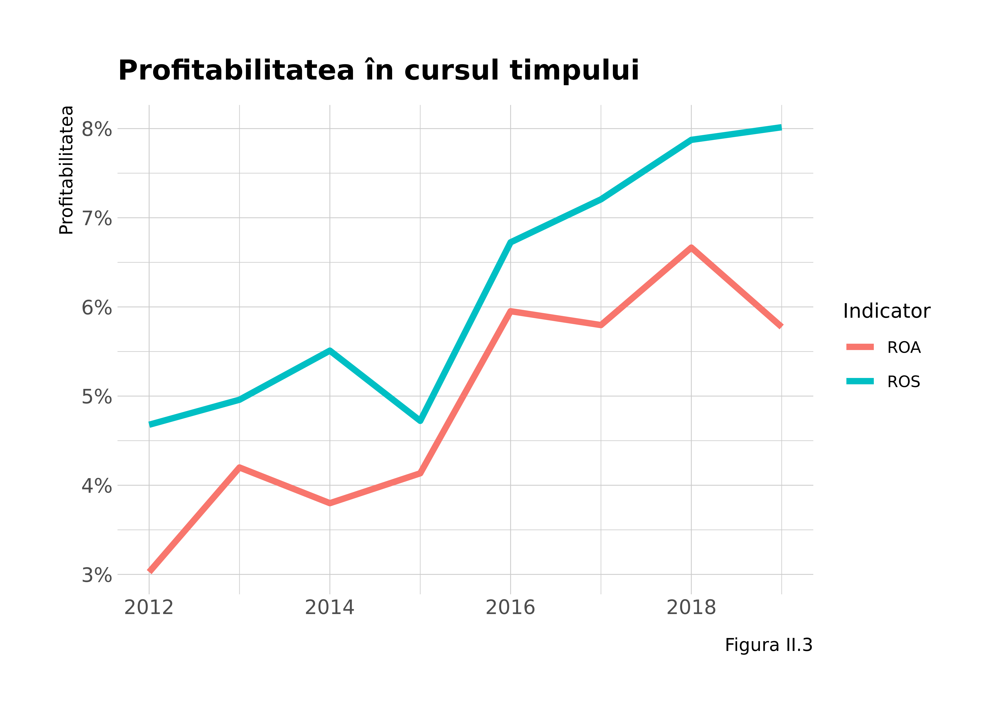
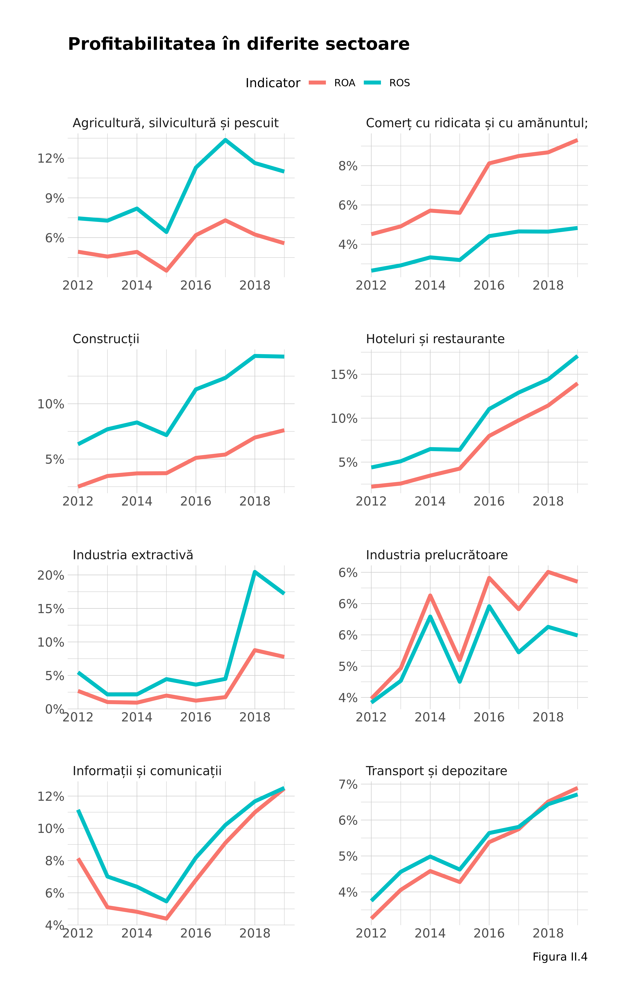
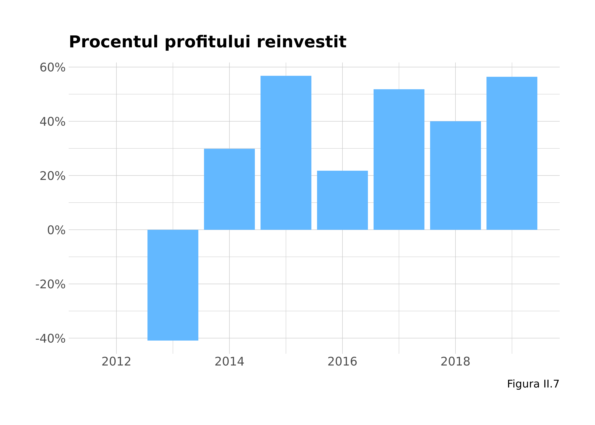

Capitol 2 Profitabilitate
În această secțiune analizăm indicatorii de profitabilitate ai firmelor, în strânsă legătură cu studiul dinamicii acumulării de capital pentru a stabili în ce măsură acesta a avut loc pe parcursul acestor ani. Teoria economică mainstream se oprește de prea multe ori la studiul veniturilor fără a analiza dinamica acumulării capitaliste, întregul scop al regimului economic în care trăim. Venitul este doar un flux, pe când averea (activele, capitalul acumulat) sunt un stoc. Dacă fluxurile nu sunt reinvestite cu scopul creșterii stocului, capitalul nu e pus la treabă și mediul economic stagnează în subdezvoltare.
Începem prin a defini câțiva indicatori de profitabilitate: ne vom opri asupra a doi dintre ei: profitabilitatea ca procent din activele totale (aici ROA de la “return on assets”) - cel mai apropiat de conceptul marxist de profitabilitate și profitabilitatea ca procent din cifra de afaceri (ROS - “return on sales”). Capitalul este definit ca diferența dintre activele totale (la rândul lor imobilizate sau circulante) și datorii. Cu aceste lucruri în minte, vom sumariza situația pentru anul 2019 în următorul tabel.
| Profitul societăților comerciale din România (2019) | ||||||||
|---|---|---|---|---|---|---|---|---|
| Tabelul II.2 | ||||||||
| categorie | Sumă | Profitabilitate | Procente din total | |||||
| profit | firme | salariati | ROA | ROS | P_profit | P_firme | P_salariati | |
| 0 | 9.8B | 323.0K | 0.0 | 4.9% | 26.3% | 7.3% | 43.5% | 0.0% |
| 1-3 | 24.2B | 281.0K | 442.0K | 11.4% | 21.7% | 18.0% | 37.8% | 10.8% |
| 3-10 | 17.8B | 86.9K | 517.4K | 2.6% | 12.4% | 13.3% | 11.7% | 12.7% |
| 10-50 | 26.4B | 42.5K | 902.4K | 9.4% | 8.3% | 19.7% | 5.7% | 22.1% |
| 50-1000 | 33.4B | 9.3K | 1.5M | 7.0% | 5.1% | 25.0% | 1.3% | 35.6% |
| peste 1000 | 22.4B | 298.0 | 767.6K | 4.8% | 5.5% | 16.7% | 0.0% | 18.8% |
| Total | 134.0B | 743.0K | 4.1M | — | — | 100.0 | 100.0 | 100.0 |
Observăm în primul rând că setul nostru de date cuprinde 743.000 de firme care angajează 4.1 milioane de salariați care au obținut 134 miliarde de lei în profit. Pentru anul 2019 s-au vărsat în conturile statului 17.7 miliarde de lei în impozit pe profit, ceea ce înseamnă 13.2 % din total, aproape de 16 % rata nominală a impozitării. Impreună cu bugetarii, cifra pentru numărul de salariați se ridică aproximativ la valoarea pe care o cunoaștem pentru numărul de angajați din economie. Cu aceste indicii putem concluziona că setul nostru de date este relativ complet.
Al doilea lucru care sare în ochi este profitabilitatea foarte crescută cu marje de profit foarte mari - mai ales cea raportată la vânzări - a firmelor mici. Dar este un procent mare dintr-o valoare mică, întrucât 30 % din firmele românești din 2019 obțin mai puțin de 4438 lei profit pe an ! Mediana este 20373 de lei pe an, ceea ce înseamnă un pic mai mult de salariul minim lunar în profit. Asta este firma tipică din economia românească ! Doar 20 % din firme obțin mai mult de 10.000 lei lunar în profit. Să vedem cum variază profitabilitatea în timp la nivelul întregii economii.

Observăm o creștere susținută după 2015 - anul revenirii din criză, cu creșterea ambelor marje de profitabilitate, excepție făcând anul 2019 pentru ROA. Dar explicația e simplă: creșterea agresivă a activelor circulante a firmei FVD GLOBAL HOUSE SA în anul 2019 mărește numitorul pentru indicatorul ROA în mod disproporționat, scăzând raportul nostru în mod semnificativ. Atât de mare este concentrarea de putere economică a unor firme. Dincolo de acest lucru, procentele sunt bune, probabil duble față de ale firmelor din Vest. Dar sumele absolute sunt teribil de mici și ar trebui investigată cauza lor prin controale țintite de la ANAF cu scopul de a înțelege cât din aceste cifre se datorează evaziunii și cât este realitate. Fără un asemenea lucru rămânem pe tărâmul speculației și nu avem uneltele necesare unei reforme importante care să permită o economie ce plătește salarii mai bune, mai performantă. Urmează să studiem profitabilitatea și pe sectoare de activitate.

Concluzia o poate trage fiecare inspectând graficul.
A acumulat România capital ? E o întrebare interesantă. Să vedem trendul capitalului agregat la nivel național în timp. Întrucât există firme care denaturează realitatea, vom calcula aceiași indicatori cu și fără a le include.

Diferența e grăitoare. Fără a lua în calcul aceste firme am rămâne cu falsa impresie că România a acumulat capital extrem de repede. În realitate creșterea este modestă și e și mai modestă decât sugerează graficul dacă ne gândim că mai pot fi firme de mare anvergură care s-au capitalizat excesiv. Cu toate acestea, creșterea nu e de ignorat, dar România are încă mai puțin capital decât un PIB întreg, mai exact vreo 60 % din el, probabil o anomalie specifică Estului dacă îl citim pe Piketty în prima lui carte, unde bogăția națională este de 5-6 ori PIB-ul anual. În aceste condiții mediul privat își permite și profituri mari cu marje mai mici. Să vedem acumularea de capital pe sectoare de activitate. Le vom selecta pe primele zece, fiind și cele mai importante.

Observăm cele mai mari acumulări de capital în industria prelucrătoare și comerț, cu un ușor declin în producția și furnizarea de energie electrică și o revenire parțială a construcțiilor, care nu au atins încă nivelul din 2012. O întrebare foarte interesantă la care nu putem răspunde, neavând acces la datele de la Registrul Comerțului este distribuția capital străin/românesc. Din păcate nu se poate răspunde la ea folosind acest set de date.
Asumând că singura schimbare căreia se datorează acumularea de capital este profitul reinvestit, putem calcula rata reinvestirii profitului înapoi în economie.

Mai precis, aceasta este rata maximă posibilă din punct de vedere teoretic - deși nu putem exclude nici efectele de devalorizare. Acest calcul nu trebuie considerat decât ca o aproximație grosolană. Ca să putem afla cu adevărat rata reinvestirii profitului este nevoie de sondaje la nivel de firmă.